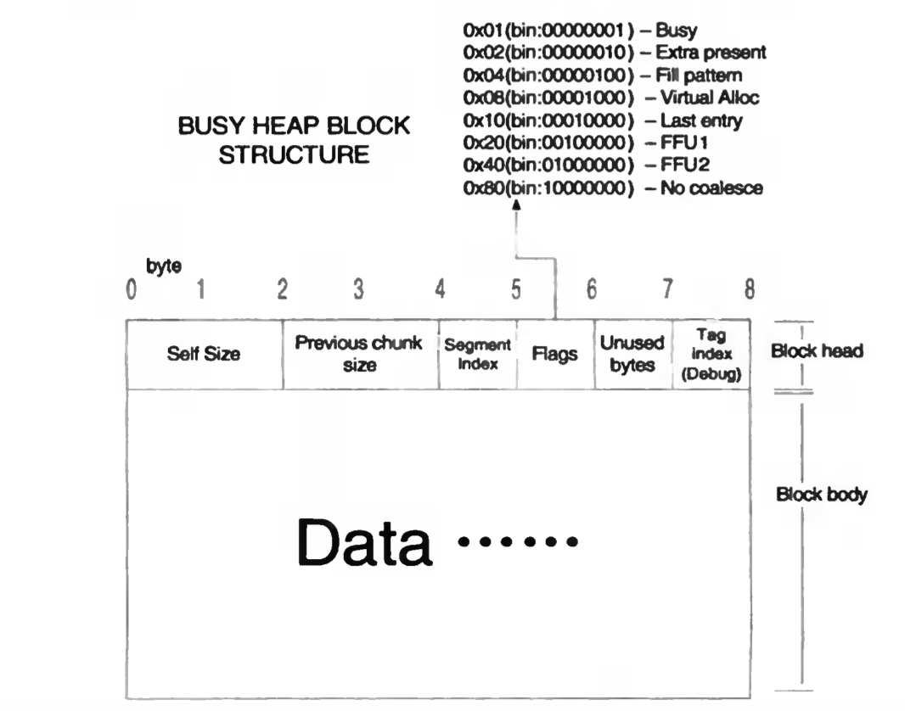

Hey! First, thanks the good introduction of 0day 安全：软件安全分析. Unfortunately, the screenshot for the lab is not clear. And the setup is a little bit different. Anyway, in this blog, I mainly replay the lab while hope to give more insights at the same time.
The main purpose of this section is to show how the freelist works:
The heap under debugging and the normal status works quite different. As specified in the book, key differences are summarised as follows:
- debugging heap does not use lookaside table (快表) and only relies on the freelist (空表)
- 所有堆块都加上16字节
- 块首标志位不同
As such, we manually add a breakpoint, i.e., _asm int 3, so that the heap manager will not realize the code is under debugging.
The executable can be found here. We use Windows 2000 & OllyDbg.
At the breakpoint, a heap is already created via `heapCreate()’ function. The handler is stored in EAX. In our example, the base address of the heap is 0x00420000. Let’s focus on the freelist, which is highly related to heap overflow. The offset of the freelist is 0x178. So let’s directly jump there.
There is only one free heap pointed by Freelist[0]. The address of the free heap is 0x00420688 (only points to the data section and does not include the 8-bytes header.). There is no other free heaps. So Freelist[1] to Freelist[127] point to themselves.
The data structure of in-use heap chunk is shown below.

Free heap chunk is almost the same except that the first 8 bytes of the data section stores the links in Freelist.
Go to 0x00420688 (as specified by Freelist[0]). Note that the header occupies 8 bytes. So let’s check the header first at 0x00420680.
As shown in the above figure, the size of the heap is 0x0130. The unit is 8 bytes. So the total size is 0x980 bytes. The size of previous chunk is 0x08.
But we apply for 0x1000 bytes. where are the other 0x20 bytes?
what is the previous chunk?
We first execute the following code to apply for 3 bytes memory. But we need 8 bytes header. In theory, 11 bytes is enough, but the calculation unit is 8 bytes. So the heap manager will assign 16 bytes to h1.
h1 = HeapAlloc(hp, HEAP_ZERO_MEMORY, 3)
Such guess is verified by the assembly code. Firstly, the address of ntdll.RtlAllocateHeap is stored to EDI. As the arguments, 3 (the real application size) plus 8 bytes of the header is pushed to the stack. Then it will call EDI to complete the assignment.
The memory changes accordingly. Specifically, the size becomes 0x02 (i.e., 16 bytes). the flags changes from 0x10 to 0x01. Note that the least bit becomes 1, indicating this chunk is in use. 0x0D means 13 (16 -3) bytes are not used.
In addition, the data in 0x420688 become 0. More precisely, only 3 bytes data are initialised to be zero. The others remain the same (one byte of flink and the blink).
The free heap chunk thus shrinks to 0x012E. The flink and blink points to Freelist[0] as usual.
The assignment for h2,h3,h4 are similar. But h5 is a little bit different. Originally, only the requested bytes are initialised. For h5, it request for 19 bytes, but all of its data are zero. why?
In fact, the reason is simple. Heap manager indeed only initialises those requested data. But at h4, the largest free chunk is located from 0x4206C0 to 0x4206C8. These 16 bytes however are used by h5. So, heap manager initialises these bytes to 0. For the remaining 16 bytes, they are zero at beginning.
Finally, after the assignment of H6, the heap looks as follows:

This verifies the assignment scheme of heap manager.
We will free h1, h3, h5 in a row. Since these three chunks are isolated, no collapse will happen. If everything works fine, then h1, h3 (16 bytes) should be indexed by Freelist[2] and h5 (32 bytes) should be indexed by Freelist[4].
| Freelist | Address | bytes |
|---|---|---|
| Freelist[0] | 0x420178 | 8 bytes |
| Freelist[1] | 0x420180 | 16 bytes |
| Freelist[2] | 0x420188 | 24 bytes |
| Freelist[3] | 0x420190 | 32 bytes |
| Freelist[4] | 0x420198 | 40 bytes |
At this moment, let’s check the freelist info. Currently, only Freelist[0] points to the free heap chunk (0x00420708), but do not forget the header.
The assembly code is attached below. Here, EBX stores 0x420688, i.e., the address of h1.

After free, the flag of h1 become 00 (i.e., free). Meanwhile, the data section are fed by the flink and blink. Here, both of them are 0x00420188 (Freelist[2]), since there is only one free chunk pointed by Freelist[2].
Check Freelist[2]. Obviously, Freelist[2] links h1.
The procedure of free h3 and h5 is similar. After free h5, Freelist[2] now has two entries: h1 & h3 (0x004206A8). Freelist[4] also links h5 (0x004206C8).
![freelist[4]_free_h1.png](../images/posts/heap/img/freelist[4]_free_h1.png)
Now let’s check the heap chunk. Obviously, for those freed chunks, their flags as well as the flink/ blink change accordingly. Take h1 as the example, flink of h1 points to h3 and its blink points to Freelist[2]. In summary, it becomes a double-linked circular list.
If we free h4, then h3, h4 and h5 are in a row. And they would be merged for more efficient chunk assignment later on.
Let’s check the h3 header. Supposingly, the data section should not change, but the size of the header would be aggregated (64 bytes). In this case, Freelist also changes accordingly. Freelist[8] would point to this chunk. Freelist[2] and Freelist[4] will not link h3 and h5, respectively. h1 also will not point to h3.
Run and verify it.
Indeed, the size of (h3+h4+h5) at 0x004206A0 is 0x08 (64bytes). This chunk points to 0x004201B8 (Freelist[7]). H1 only points to Freelist[2].
Thanks for your reading.